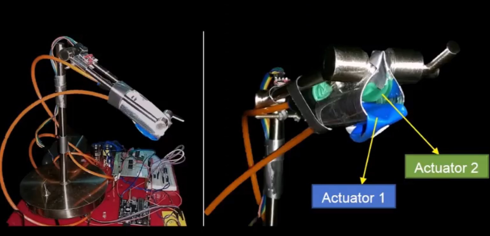
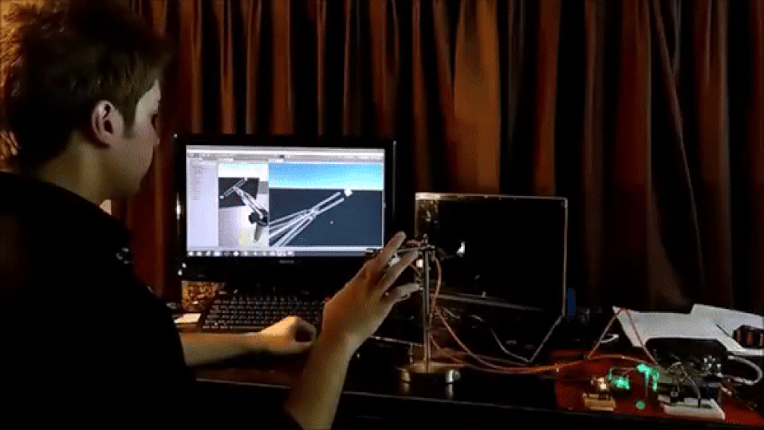

04 / ACADEMIC PROJECT
Pneumatic Mechanism for VR
A multimodal teleoperation study exploring pneumatic feedback in a virtual environment.
View the research publication ↗
PROJECT OVERVIEW
The idea and implementation.
I studied virtual teleoperation task performance with multimodal feedback. The mechanism used pneumatic actuation to provide feedback to the remote operator in a Unity-based application.
The setup combined air actuators, IMU sensors, solenoid valves, an amplifier circuit, and a microcontroller, with a repurposed lamp forming part of the physical assembly.
Show animated demonstration
